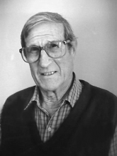

Please note: the AAS Obituaries are temporarily being hosted on this website while their full content is being ingested into the PubPub publishing platform newly adopted by the Bulletin of the American Astronomical Society. When the migration is complete, your existing links will take you to the final, migrated content. Contact peter.williams@aas.org with any questions.
Daniel M. Popper (1913-1999)
Daniel Magnes Popper was born at Oakland, California on 17 August 1913 into an assimilated Jewish family that had already provided several California community leaders. He earned degrees at the University of California, Berkeley, an AB in 1934 and a PhD in 1938, defending a dissertation on Spectrophotometry of Nova Lacertae 1936, supervised by Arthur B. Wyse. The published version appeared in Astrophysical Journal, though Dan said many years later that he would have preferred publication in Lick Observatory Bulletins.
Popper's early career was a peripatetic one, as he moved from a Martin Kellogg Fellowship at Eastman Kodak in Rochester, where he met his future wife (1938-39), to assistant astronomer and instructor positions at McDonald Observatory (where he was one of the founding staff members, 1939-42); on to an instructorship at Yerkes (1942-43), back to Berkeley to the Radiation Laboratory (Rad Lab) for war work (1943-45), then returning to Yerkes as instructor (1945-46) and assistant professor (1946-47). But, in 1947, he joined the new astronomy department at UCLA as its first stellar astronomer, and there he stayed, becoming full professor in 1955, chairing the department from 1951 to 1957 and 1959 to 1963, and retiring as professor emeritus and research astronomer in 1978.
He was largely responsible for building the department from a service teaching one to a fully-recognized graduate program, recruiting Lawrence Aller and George Abell among other early members. He was a guest investigator at Mt. Wilson and Palomar Observatories from 1949 to 1978 and spent some sabbatical time at KPNO, but Lick was his first and last love, and he held the record for the longest observing career there in history, ending only months before his death on 9 September 1999.
In addition to the AAS, Popper was a member of the Astronomical Society of the Pacific (from early in his graduate career) and of the International Astronomical Union, initially through Commission 29 (stellar spectra), but with a rapid, permanent transition to Commission 42 (close binary stars), on whose organizing committee he eventually served.
He was the 1984 Karl Schwarzschild lecturer of the Astronomische Gesellschaft. One of Popper's few extended absences from UCLA was spent on an NSF Senior Research Fellowship at the Stellar Interferometry Program in Narrabri, NSW, Australia (1964-65), where he helped aim the program in the direction of establishing accurate stellar temperature scales. Popper's first paper, written with Lawrence Aller and Alfred Mikesell, dealt with the spectrum of DQ Her (Nova Herculis 1934). Both co-authors survive him, and indeed it must have been a healthy object to study, since other observers of the 1934 Nova who are still part of the community include Hermann Brück and Fred Whipple. Other early work included an orbit determination for a comet (1935d, van Biesbroeck; in those days at Lick every student had to do a comet orbit), consideration of the spectrum of Nova Lac 1936 (in which he correctly identified greatly-broadened lines of hydrogen and other common elements), and of SN 1937C (in which, he said, the lines were different from those of novae, though comparably broad, and not to be identified, a conclusion which stood for nearly 40 years). Together with Carl Seyfert (of the galaxies), Popper tackled in 1940-41 the problem of measuring the ratio of total to selective absorption in the interstellar medium, so that colors could be used directly to determine stellar distances. Their value was (allowing for the difference in color systems) essentially the modern one, A ν = 3 E (B – V). The project, which continued until 1950, was aimed primarily at getting radial velocities and distances for B stars, to be used in galactic rotation studies. It included the first two spectrograms ever taken of HDE 226868 (the optical counterpart of the black hole X-ray binary, Cygnus X-I). Unfortunately, the two spectra were taken almost precisely 47 orbit periods apart, thus delaying the discovery of the system as a binary for some 30 years. An early determination of the gravitational redshift of 40 Eridani B is another Popper accomplishment relatively far afield from the territory we primarily associate with him. Dan Popper, almost uniquely in the modem astronomical community, was a "hedgehog," the kind of scientist who knows one big thing (while "foxes" know many small things). What he knew was how to determine orbits and masses of spectroscopic binaries, more and better than anybody else.
Contrary to much astronomical custom, Popper attached, generously realistic error bars to his measurements, so that more recent redeterminations have confirmed his early results more precisely than could reasonably have been expected. Popper's first binary orbit appeared in 1942, his last in 1998, and just about every year in between, he published one or two papers with one to a few definitive orbits each. His observing career spanned the range from photographic emulsions to CCDs, and he pioneered the technique of exposing two orders of a grating spectrum simultaneously by juxtaposing two emulsions, so as to pick up H-alpha as well as the blue region at the same time, and he welcomed echelle spectrograms with enthusiasm as a result. Popper's focus moved slowly from the B stars of his youth to later spectral types, including many G and K stars in his retirement years. The last of these was HS Aqr, the radial velocity data for which he assembled in 1998-99, with colleagues in Copenhagen supplying the complementary light curves. A very large fraction of modern stellar astrophysics is built on the foundations of stellar masses as a function of spectral type measured by D.M. Popper.
He also wrote the definitive review articles on the subject, though he admitted privately to being prouder of the individual orbits than of the collecting process.
In 1969, he defined, on spectral criteria, the class of RS CVn stars (nearly equal masses, slightly evolved, and sporting emission lines), which later turned out to include many of the bright stellar sources of X-ray and radio emission. His intended prototype was AR Lac, rather than RS CVn, which was suggested by his student John Oliver. Popper had only one formal PhD student, John Oliver, now of the University of Florida, but served on many PhD committees, guided many research assistants who were employed on the binary orbit program, and influenced innumerable undergraduates through his introductory courses.
At times, he lamented the difficulty of finding a younger astronomer willing to acquire the demanding skills needed to obtain accurate binary orbits. Johaness Andersen of Copenhagen became, in effect, Popper's virtual student, and studies of spectroscopic orbits do and will continue in his group. The people who shared memories of Dan Popper for this tribute used a remarkably diverse set of adjectives, ranging from gentle, kind, soft-spoken, reticent, supporting, low-key, encouraging, and helpful, thorough, modest, fair, accurate, conscientious, and openminded, to authoritative, fussy, uncompromising (particularly about careless work on binaries), and undeviatingly honest. He was the proverbial gentleman and scholar, who could criticize without crushing, but who also once faced off with a mountain lion and won. He held firm by scholarly standards, even outside astronomy.
A graduate student who had sneaked through the UCLA language requirement by acquiring no more than a passing knowledge of French and German soon found himself assigned one paper in each to review for the department's journal club. No one would ever have supposed that Dan held the Pan American chair in astrophysical travel, but colleagues remembered pleasant and informative encounters in Moscow, Hamburg, Korea, Denmark, Argentina, Italy, Toronto, and many other places. The proceedings of IAU Colloquium 111, on fundamental stellar quantities (1984) were, very appropriately, dedicated to him. Given that Popper was both an extraordinarily private. and an extraordinarily nice person, it is perhaps not surprising that very few colleagues recounted what you might call "Popper stories." In fact, you have to go back to his graduate student days and a memory shared by Alfred Mikesell: I did see Dan Popper ruffled once. He had written a long term paper for Birge (head of the physics department), which was returned to him with no comment except a red ink circle around the word "absorption," as in absorption line. The word appeared many times in the paper and was encircled every time. Dan had spelled' it "absorbtion." Said Dan, "Well, at least he can see I'm consistent." He was too ruffled to recognize a compliment: Birge had read the whole thing! Dan's most famous avocation was hiking and climbing in the Sierra Nevadas, Alaska, and other wilderness locations. His participation in folk dancing with his first wife was less well known. Daniel Popper died on 9/9/99 (it was indeed an evil date) of bone cancer, the knowledge of which he shared with almost no one, only a few weeks after ceasing to come to the office regularly and to communicate electronically with colleagues. Jaunty, and very private, to the last, he claimed the cane he used briefly was mostly a fashion accessory.
In 1940, Popper married Catherine Salo, who predeceased him. He is survived by his second wife, Elizabeth and a son Roger, of Guatemala. Contributors to this obituary include (alphabetically) Lawrence Aller, Johannes Andersen, Alan Batten, William Bidelman, Jens Clausen, Anne Cowley, John Davis, David DeVorkin, Michael Dworetsky, Paul Etzel, Jesse Greenstein, Roger Griffin, Bambang Hidayat, Karen Kwitter, Bruce Margon, Harold McAlister, Alfred Mikesell, Don Morton, John Oliver, Jorge Sahade, Sumner Starrfield, Jocelyn Tomkin, and George Wallerstein. The complete texts of their remarks will be archived with HAD materials at the Niels Bohr Library of the American Center for Physics.
Photo courtesy of University of California Los Angeles.
Obituary written by: Virginia Trimble (University of Maryland and University of California Irvine)
BAAS Citation: BAAS, 1999, 31, 1608
SAO/NASA ADS Bibcode: 1999BAAS...31.1608T